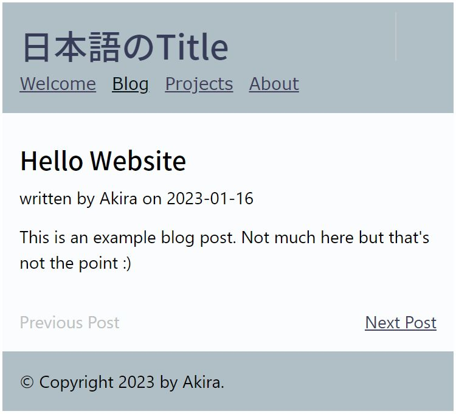

記事のページの中で、前の記事や後の記事へ移動ができるように、メソッドget_siblings()を利用してページ下にリンクを追加します。
これには、ページオブジェクトが持つメソッドget_siblings()を利用します。まずはtemplates/macors/へ新規にファイルを作成し、以下の内容を記述します。
{% macro render_sibling_page_links(post) %}
<div class="siblings">
{% if post.has_next() %}
<a href="{{ post.get_siblings().next_page|url }}">Previous Post</a>
{% else %}
<span class="disabled">Previous Post</span>
{% endif %}
{% if post.has_prev() %}
<a href="{{ post.get_siblings().prev_page|url }}">Next Post</a>
{% else %}
<span class="disabled">Next Post</span>
{% endif %}
</div>
{% endmacro %}
テンプレートblog-post.htmlへ上記マクロのインポートとレンダリングを記述します。
{% extends "layout.html" %}
{% from "macros/blog.html" import render_blog_post %}
{% from "macros/siblings.html" import render_sibling_page_links %}
{% block title %}{{ this.title }}{% endblock %}
{% block body %}
{{ render_blog_post(this) }}
{{ render_sibling_page_links(this) }}
{% endblock %}
custom.cssへスタイルを追加します。
/* previous post & next post */
.siblings {
display: flex;
justify-content: space-between;
padding-top: var(--spacing-2);
}
